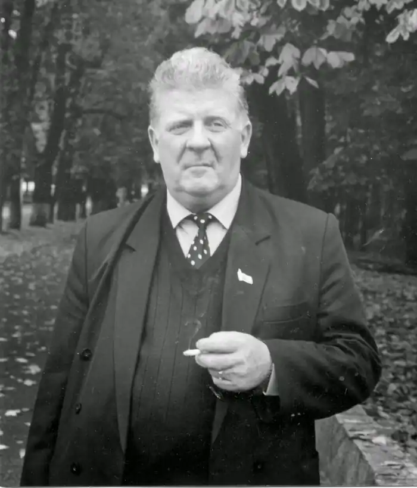

Семеняка Віктор Павлович (29.10.1948, с. Ничипорівка Яготинського р-ну Київської обл.) – письменник-гуморист.
Закінчив Львівський кооперативний технікум (нині кооперативний коледж економіки і права), Київський державний університет ім. Т. Г. Шевченка (тепер національний університет ім. Тараса Шевченка). Працював у районних газетах Чернігівської та Полтавської областей, був кореспондентом журналу "Перець" у Полтавській області, власкором журналу "Україна", редактором сатиричної газети "Ковінька". Трудова діяльність тісно пов’язана з полтавськими газетами "Комсомолець Полтавщини" та "Зоря Полтавщини".
Перші публікації з’явилися 1964. Окремі твори перекладено російською, білоруською, литовською, німецькою, в’єтнамською, болгарською, французькою, англійською мовами. Автор публіцистичних книг "На Довженковій землі", "Хліборобському роду немає переводу", "Добром зігріте серце", "Одвік твоя земля", "Буде сміх, буде й хліб", майже двох десятків гумористичних книг, зокрема таких: "Жертва прогнозу" (1975), "Відрядження на Місяць" (1980), "Бережіть нерви" (1983), "Урок для інших" (1983), "Танго для директора" (1985), "Новорічний сюрприз" (1988), "Сам себе перехитрив" (1989), "Фатальна любов" (1990), "Секс у кадрі" (1992), "Підозрілий тип" (1991), "Таблетка під язик" (1998), "Шанси є у всіх" (2003), "Мільйони на халяву" (2005). Член Національної спілки журналістів України (з 1978), Національної спілки письменників України (з 1985). Лауреат літературних премій ім. Олександра Ковіньки (1990), ім. Нестора Літописця (2006), обласних літературних ім. Панаса Мирного (2002), ім. Петра Артеменка (1978), ім. Григорія Яценка (2000), Міжнародної української літературно-мистецької премії ім. Г. С. Сковороди (2011), ім. Остапа Вишні (2012). Заслужений журналіст України. Кавалер ордена "За заслуги" III ступеня. Л-ра: Сучасні письменники Полтавщини: довідник / М. І. Степаненко. – Полтава: ПП Шевченко Р.В., 2014. – 90 с.; Літературно-мистецька Полтавщина: довідник / М. І. Степаненко. – Гадяч: Видавництво "Гадяч", 2013. – 500 с.; Літературні, літературно-мистецькі премії в Україні: наукове видання / М. І. Степаненко. – Полтава: ПП Шевченко Р.В., 2014. – 498 с.